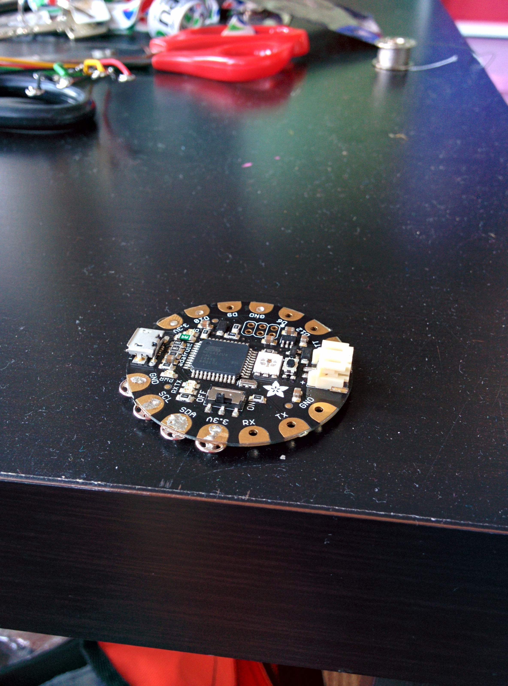
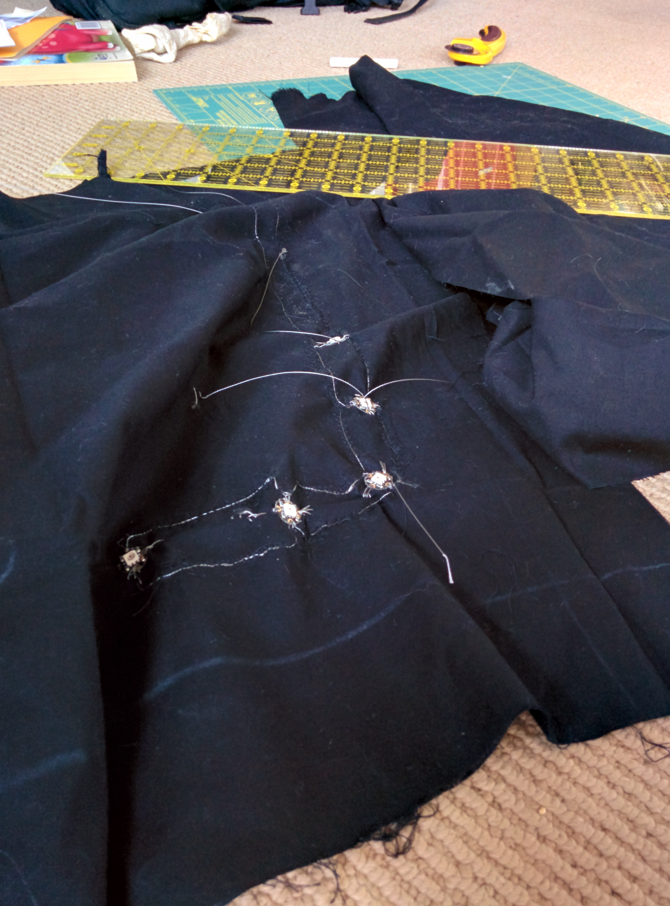

Chameleon Scarf

This weekend Danielle and I have been working on building a scarf with LEDs in it that will match whatever colour you place against it. That’s right, it’s a CHAMELON SCARF. Here are the steps
Step 0: GET INSPIRED!
I was stumbling through the Adafruit Learning Site and I found this:

ZOMG! It’s so cool! BONUS: I had all the parts just lying around at home…
Step 1: Gather materials
You will need the following:
- Adafruit Flora
- Sewable Neopixels
- Steel thread
- Conductive Fabric
- Adafruit Color Sensor (TCS34725)
- Clear nail polish
- Fabric for a scarf
You can get most of this in a single pack from Adafruit here: https://www.adafruit.com/products/1458

Step 2: Get Sewing
Here’s the basic circuit diagram

We decided to go with more of a banada style scarf versus a proper loop.

The data lines for the neo pixels are actually strips of conductive fabric, rather than steel thread.
Step 3: Solder!
I really liked the idea of using fabric snaps as shown here: https://learn.adafruit.com/flora-snaps/overview
It’s actually pretty easy to solder, although the first few times I had too much solder on the snap and they didn’t fit well I even put some solder on the other half of the snaps to I could easily add and remove the colour sensor
Step 4: Debug
Check ALL the wires.
Do it again.
Step 5: Code
#include <Wire.h>
#include "Adafruit_TCS34725.h"
#include <Adafruit_NeoPixel.h>
// Parameter 1 = number of pixels in strip
// Parameter 2 = pin number (most are valid)
// Parameter 3 = pixel type flags, add together as needed:
// NEO_RGB Pixels are wired for RGB bitstream
// NEO_GRB Pixels are wired for GRB bitstream
// NEO_KHZ400 400 KHz bitstream (e.g. FLORA pixels)
// NEO_KHZ800 800 KHz bitstream (e.g. High Density LED strip)
Adafruit_NeoPixel strip = Adafruit_NeoPixel(5, 10, NEO_GRB + NEO_KHZ800);
Adafruit_NeoPixel onboard = Adafruit_NeoPixel(1, 8, NEO_RGB + NEO_KHZ400);
// our RGB -> eye-recognized gamma color
byte gammatable[256];
Adafruit_TCS34725 tcs = Adafruit_TCS34725(TCS34725_INTEGRATIONTIME_50MS, TCS34725_GAIN_4X);
void setup() {
Serial.begin(9600);
Serial.println("Color View Test!");
strip.begin();
strip.show(); // Initialize all pixels to 'off'
onboard.begin();
onboard.show();
if (tcs.begin()) {
Serial.println("Found sensor");
} else {
Serial.println("No TCS34725 found ... check your connections");
while (1) {
// halt!
error();
}
}
// thanks PhilB for this gamma table!
// it helps convert RGB colors to what humans see
for (int i = 0; i < 256; i++) {
float x = i;
x /= 255;
x = pow(x, 2.5);
x *= 255;
gammatable[i] = x;
//Serial.println(gammatable[i]);
}
for (int i = 0; i < 3; i++) { //this sequence flashes the first pixel three times as a countdown to the color reading.
strip.setPixelColor (0, strip.Color(188, 188, 188)); //white, but dimmer-- 255 for all three values makes it blinding!
strip.show();
delay(1000);
strip.setPixelColor (0, strip.Color(0, 0, 0));
strip.show();
delay(500);
}
uint16_t clear, red, green, blue;
tcs.setInterrupt(false); // turn on LED
delay(60); // takes 50ms to read
tcs.getRawData(&red, &green, &blue, &clear);
tcs.setInterrupt(true); // turn off LED
Serial.print("C:\t"); Serial.print(clear);
Serial.print("\tR:\t"); Serial.print(red);
Serial.print("\tG:\t"); Serial.print(green);
Serial.print("\tB:\t"); Serial.print(blue);
// Figure out some basic hex code for visualization
uint32_t sum = red;
sum += green;
sum += blue;
sum += clear;
float r, g, b;
r = red; r /= sum;
g = green; g /= sum;
b = blue; b /= sum;
r *= 256; g *= 256; b *= 256;
Serial.print("\t");
Serial.print((int)r, HEX); Serial.print((int)g, HEX); Serial.print((int)b, HEX);
Serial.println();
Serial.print((int)r ); Serial.print(" "); Serial.print((int)g); Serial.print(" "); Serial.println((int)b );
colorWipe(strip.Color(gammatable[(int)r], gammatable[(int)g], gammatable[(int)b]), 0);
}
// Fill the dots one after the other with a color
void colorWipe(uint32_t c, uint8_t wait) {
for (uint16_t i = 0; i < strip.numPixels(); i++) {
strip.setPixelColor(i, c);
strip.show();
delay(wait);
}
}
void loop() {
//loop is empty because it only takes the color reading once on power up! Turn the scarf off and on again to change the color.
}
void error() {
Serial.println(" :(");
onboard.setPixelColor(0, strip.Color(80, 0, 0));
onboard.show();
delay(500);
onboard.setPixelColor(0, 0);
onboard.show();
delay(500);
}